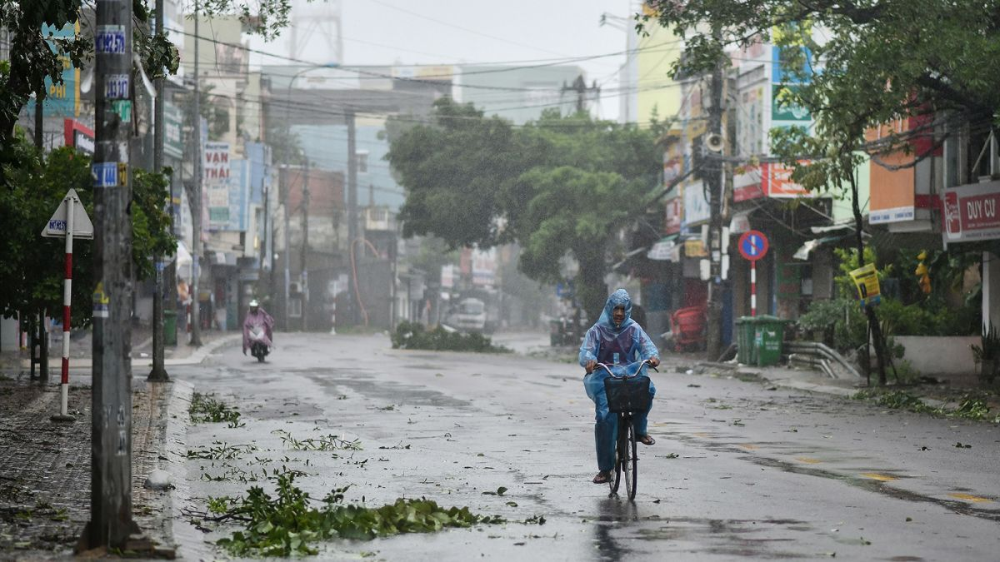

Introduction
Hover over the image to see the text.
Climate justice and technology play crucial roles in addressing environmental challenges in Vietnam, particularly concerning issues like rising sea levels, extreme weather events, biodiversity conservation, and impact on agriculture.
Climate Issues in Vietnam
Vietnam faces several pressing climate change issues that pose significant challenges to its environment, economy, and population:
| Rising Sea Levels | Extreme Weather Events |
|---|---|
| Vietnam's long coastline and low-lying coastal regions are particularly vulnerable to rising sea levels attributed to global warming. As sea levels continue to rise, coastal erosion intensifies, leading to land loss and threatening vital infrastructure, agricultural lands, and communities. |  The frequency and intensity of extreme weather events, including typhoons, storms, and heavy rainfall, have been increasing in Vietnam. These events result in widespread flooding, landslides, and infrastructure damage, affecting livelihoods and exacerbating poverty, especially in rural areas. |
| Biodiversity Loss | Impact on Agriculture |
| Vietnam is home to rich biodiversity, but deforestation, habitat degradation, and illegal wildlife trade threaten many species. Loss of natural habitats due to climate change-related factors further endangers iconic species like the Indochinese tiger, elephants, and various plant species. | Climate variability, including changes in rainfall patterns and temperature, affects Vietnam's agricultural sector. Shifts in growing seasons, increased pest infestations, and decreased crop yields pose challenges to food production and rural livelihoods. |
Technology Solutions
In response to these climate change challenges, Vietnam is leveraging technology and innovation to enhance resilience and sustainability:


- Satellite Monitoring and Geographic Information Systems (GIS): Vietnam uses satellite imagery and GIS technology to monitor land use changes, deforestation rates, and coastal erosion. This data informs land-use planning, natural resource management, and disaster response efforts.
- Climate-Resilient Agriculture: Agricultural innovations such as drought-resistant crop varieties, precision farming techniques, and aquaculture systems are promoted to enhance climate resilience. Practices like agroforestry and soil conservation help mitigate the impacts of extreme weather events.
- Renewable Energy Development: Vietnam is transitioning towards renewable energy sources like solar, wind, and hydroelectric power to reduce reliance on fossil fuels and lower greenhouse gas emissions. Investment in clean energy technologies supports sustainable development goals.
- Community-Based Adaptation Initiatives: Technology-enabled community engagement and capacity-building initiatives empower local communities to implement climate adaptation strategies. Early warning systems, climate-smart infrastructure, and ecosystem-based approaches enhance resilience at the community level.
By integrating technology solutions with climate action, Vietnam aims to strengthen its climate resilience, protect vulnerable communities, and preserve its natural resources amid the ongoing challenges posed by climate change. The adoption of innovative approaches and sustainable practices is essential for building a climate-resilient future in Vietnam and beyond.